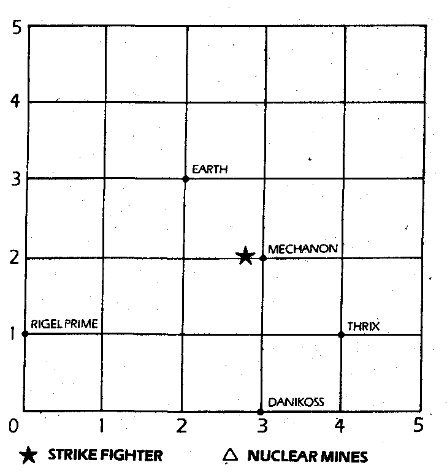

295
Nothing happens. CAIN tells you that the grid exists in only two dimensions, you have tried to move in a third dimension. The radiation level is critical. Which co-ordinates will you try next?
| -2/ 4/ 1 | Turn to 349 |
| 0/ 5/ 5 | Turn to 321 |
| 0/-5/-5 | Turn to 273 |